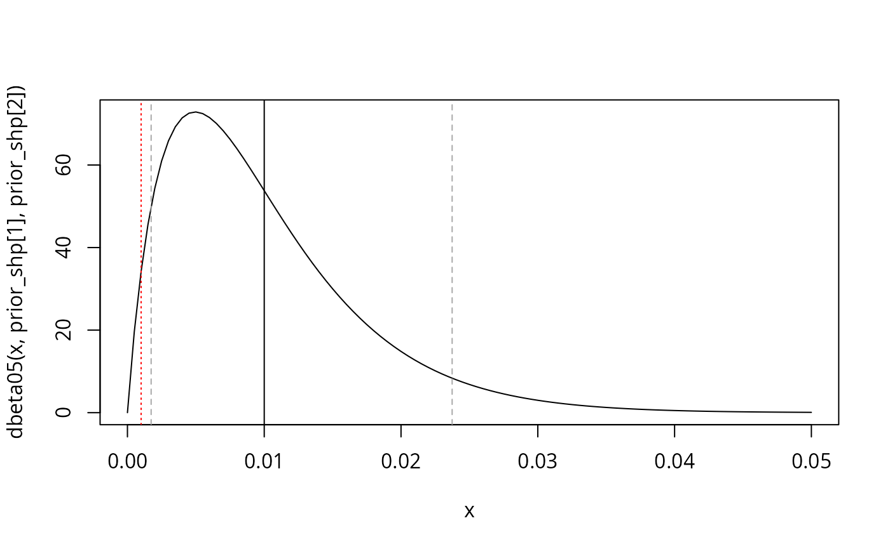

library(wgsLR)
#> Loading required package: pracma
#> Loading required package: DEoptim
#> Loading required package: parallel
#>
#> DEoptim package
#> Differential Evolution algorithm in R
#> Authors: D. Ardia, K. Mullen, B. Peterson and J. UlrichLoad data
Load in allele frequencies, columns Chr,
Position, Ref, and AF
required::
d_AF <- data.frame(Chr = c("chr1", "chr1", "chr2", "chr2"),
Position = c(111, 112, 221, 222),
Ref = c("A", "G", "T", "T"),
AF = c(0.4, 0.3, 0.2, 0.25)) # AF for reference
d_AF
#> Chr Position Ref AF
#> 1 chr1 111 A 0.40
#> 2 chr1 112 G 0.30
#> 3 chr2 221 T 0.20
#> 4 chr2 222 T 0.25Load in trace and reference samples.
For trace, columns Chr,
Position, cM, Ref, and
GT required:
d_trace <- data.frame(Chr = c("chr1", "chr1", "chr2", "chr2"),
Position = c(111, 112, 221, 222), # dummy for tutorial only
cM = c(0.1, 0.11, 0.2, 0.21), # dummy for tutorial only
Ref = c("A", "G", "T", "T"),
GT = c("0/0", "1/1", "0/1", "0/0"))
d_trace
#> Chr Position cM Ref GT
#> 1 chr1 111 0.10 A 0/0
#> 2 chr1 112 0.11 G 1/1
#> 3 chr2 221 0.20 T 0/1
#> 4 chr2 222 0.21 T 0/0For reference, columns Chr,
Position, and GT required (trace has
information about cM and Ref):
d_ref <- data.frame(Chr = c("chr1", "chr1", "chr2", "chr2"),
Position = c(111, 112, 221, 222), # dummy for tutorial only
GT = c("0/1", "1/1", "0/1", "0/0"))
d_ref
#> Chr Position GT
#> 1 chr1 111 0/1
#> 2 chr1 112 1/1
#> 3 chr2 221 0/1
#> 4 chr2 222 0/0Merge (join) data
Annotate trace sample with reference sample and AF
info:
d_trace$GT012 <- GT_convert_to_012(d_trace$GT)
d_ref$GT012 <- GT_convert_to_012(d_ref$GT)
d_trace_AF <- merge(x = d_trace,
y = d_AF,
suffixes = c("_trace", "_AF"),
by = c("Chr", "Position"),
all = FALSE)
d_trace_AF
#> Chr Position cM Ref_trace GT GT012 Ref_AF AF
#> 1 chr1 111 0.10 A 0/0 0 A 0.40
#> 2 chr1 112 0.11 G 1/1 2 G 0.30
#> 3 chr2 221 0.20 T 0/1 1 T 0.20
#> 4 chr2 222 0.21 T 0/0 0 T 0.25Be sure that the Ref is correct:
all(d_trace_AF$Ref_trace == d_trace_AF$Ref_AF)
#> [1] TRUEPrepare case data:
d_trace_ref <- merge(x = d_trace_AF,
y = d_ref,
suffixes = c("", "_ref"),
by = c("Chr", "Position"),
all = FALSE)
d_trace_ref
#> Chr Position cM Ref_trace GT GT012 Ref_AF AF GT_ref GT012_ref
#> 1 chr1 111 0.10 A 0/0 0 A 0.40 0/1 1
#> 2 chr1 112 0.11 G 1/1 2 G 0.30 1/1 2
#> 3 chr2 221 0.20 T 0/1 1 T 0.20 0/1 1
#> 4 chr2 222 0.21 T 0/0 0 T 0.25 0/0 0Generate profile sets
Generate a number of profile sets from minimal cM
requirement:
set.seed(1)
lst_profilesets_loose <- generate_profilesets(d = d_trace_ref, cM_thres = 0.00001, n = 4)
lst_profilesets_loose
#> [[1]]
#> Chr Position cM Ref_trace GT GT012 Ref_AF AF GT_ref GT012_ref
#> chr1.1 chr1 111 0.10 A 0/0 0 A 0.40 0/1 1
#> chr1.2 chr1 112 0.11 G 1/1 2 G 0.30 1/1 2
#> chr2.3 chr2 221 0.20 T 0/1 1 T 0.20 0/1 1
#> chr2.4 chr2 222 0.21 T 0/0 0 T 0.25 0/0 0
#>
#> [[2]]
#> Chr Position cM Ref_trace GT GT012 Ref_AF AF GT_ref GT012_ref
#> chr1.1 chr1 111 0.10 A 0/0 0 A 0.40 0/1 1
#> chr1.2 chr1 112 0.11 G 1/1 2 G 0.30 1/1 2
#> chr2.3 chr2 221 0.20 T 0/1 1 T 0.20 0/1 1
#> chr2.4 chr2 222 0.21 T 0/0 0 T 0.25 0/0 0
#>
#> [[3]]
#> Chr Position cM Ref_trace GT GT012 Ref_AF AF GT_ref GT012_ref
#> chr1.1 chr1 111 0.10 A 0/0 0 A 0.40 0/1 1
#> chr1.2 chr1 112 0.11 G 1/1 2 G 0.30 1/1 2
#> chr2.3 chr2 221 0.20 T 0/1 1 T 0.20 0/1 1
#> chr2.4 chr2 222 0.21 T 0/0 0 T 0.25 0/0 0
#>
#> [[4]]
#> Chr Position cM Ref_trace GT GT012 Ref_AF AF GT_ref GT012_ref
#> chr1.1 chr1 111 0.10 A 0/0 0 A 0.40 0/1 1
#> chr1.2 chr1 112 0.11 G 1/1 2 G 0.30 1/1 2
#> chr2.3 chr2 221 0.20 T 0/1 1 T 0.20 0/1 1
#> chr2.4 chr2 222 0.21 T 0/0 0 T 0.25 0/0 0
rm(lst_profilesets_loose) # not useds
lst_profilesets <- generate_profilesets(d = d_trace_ref, cM_thres = 1, n = 4)
lst_profilesets
#> [[1]]
#> Chr Position cM Ref_trace GT GT012 Ref_AF AF GT_ref GT012_ref
#> chr1 chr1 112 0.11 G 1/1 2 G 0.30 1/1 2
#> chr2 chr2 222 0.21 T 0/0 0 T 0.25 0/0 0
#>
#> [[2]]
#> Chr Position cM Ref_trace GT GT012 Ref_AF AF GT_ref GT012_ref
#> chr1 chr1 112 0.11 G 1/1 2 G 0.3 1/1 2
#> chr2 chr2 221 0.20 T 0/1 1 T 0.2 0/1 1
#>
#> [[3]]
#> Chr Position cM Ref_trace GT GT012 Ref_AF AF GT_ref GT012_ref
#> chr1 chr1 111 0.1 A 0/0 0 A 0.4 0/1 1
#> chr2 chr2 221 0.2 T 0/1 1 T 0.2 0/1 1
#>
#> [[4]]
#> Chr Position cM Ref_trace GT GT012 Ref_AF AF GT_ref GT012_ref
#> chr1 chr1 111 0.1 A 0/0 0 A 0.4 0/1 1
#> chr2 chr2 221 0.2 T 0/1 1 T 0.2 0/1 1Prepare genotype probabilities. Here, we assume Hardy-Weinberg
equilibrium and that the AF column is the Ref
allele probability:
lst_GTprobs <- lapply(lst_profilesets, \(d) {
lapply(d$AF, \(q) {
c(q^2, 2*(1-q)*q, (1-q)^2)
})
})
lst_GTprobs
#> [[1]]
#> [[1]][[1]]
#> [1] 0.09 0.42 0.49
#>
#> [[1]][[2]]
#> [1] 0.0625 0.3750 0.5625
#>
#>
#> [[2]]
#> [[2]][[1]]
#> [1] 0.09 0.42 0.49
#>
#> [[2]][[2]]
#> [1] 0.04 0.32 0.64
#>
#>
#> [[3]]
#> [[3]][[1]]
#> [1] 0.16 0.48 0.36
#>
#> [[3]][[2]]
#> [1] 0.04 0.32 0.64
#>
#>
#> [[4]]
#> [[4]][[1]]
#> [1] 0.16 0.48 0.36
#>
#> [[4]][[2]]
#> [1] 0.04 0.32 0.64Compute evidential weight
Compute the WoE’s.
No errors possible
First with fixed error probabilities of 0:
LRs_w0 <- lapply(seq_along(lst_profilesets), \(i) {
d_SNPs <- lst_profilesets[[i]]
genotype_probs <- lst_GTprobs[[i]]
calc_LRs_w(xT = d_SNPs$GT012, xR = d_SNPs$GT012_ref, w = 0, p = genotype_probs)
})
LRs_w0
#> [[1]]
#> [1] 2.040816 16.000000
#>
#> [[2]]
#> [1] 2.040816 3.125000
#>
#> [[3]]
#> [1] 0.000 3.125
#>
#> [[4]]
#> [1] 0.000 3.125
WoE_w0 <- sapply(LRs_w0, \(lr) sum(log10(lr)))
WoE_w0
#> [1] 1.5139239 0.8046539 -Inf -Inf
WoE_w0_avg <- mean(WoE_w0)
WoE_w0_avg
#> [1] -InfFixed, known error rates
Then with wT = 1/100 and wR = 1/1000
LRs_wT0_01wR0_001 <- lapply(seq_along(lst_profilesets), \(i) {
d_SNPs <- lst_profilesets[[i]]
genotype_probs <- lst_GTprobs[[i]]
calc_LRs_wTwR(xT = d_SNPs$GT012, xR = d_SNPs$GT012_ref,
wT = 1/100, wR = 1/1000,
p = genotype_probs)
})
LRs_wT0_01wR0_001
#> [[1]]
#> [1] 2.021544 14.983453
#>
#> [[2]]
#> [1] 2.021544 2.983944
#>
#> [[3]]
#> [1] 0.06516771 2.98394368
#>
#> [[4]]
#> [1] 0.06516771 2.98394368
WoE_wT0_01wR0_001 <- sapply(LRs_wT0_01wR0_001, \(lr) sum(log10(lr)))
WoE_wT0_01wR0_001
#> [1] 1.4812950 0.7804737 -0.7111769 -0.7111769
WoE_wT0_01wR0_001_avg <- mean(WoE_wT0_01wR0_001)
WoE_wT0_01wR0_001_avg
#> [1] 0.2098537Fixed reference sample error rates, integrate over trace sample error rate
And now wR = 1/1000 and integrating over wT
with this prior distribution (red dotted is wR, grey dashed
mark 5% and 95% quantiles):
prior_mean <- 1/100
prior_var <- prior_mean^2/2
prior_shp <- wgsLR::get_beta_parameters(mu = prior_mean,
sigmasq = prior_var,
a = 0,
b = 0.5)
curve(dbeta05(x, prior_shp[1], prior_shp[2]), from = 0, to = 0.05)
abline(v = prior_mean)
abline(v = qbeta05(0.05, prior_shp[1], prior_shp[2]), lty = 2, col = "darkgrey")
abline(v = qbeta05(0.95, prior_shp[1], prior_shp[2]), lty = 2, col = "darkgrey")
abline(v = 1/1000, lty = 3, col = "red")
qbeta05(0.05, prior_shp[1], prior_shp[2])
#> [1] 0.001732418
qbeta05(0.95, prior_shp[1], prior_shp[2])
#> [1] 0.02373713So that 90% central probability of the prior is between 0.0017 and 0.024.
Using the same prior under both hypotheses, we get:
WoE_int <- lapply(seq_along(lst_profilesets), \(i) {
d_SNPs <- lst_profilesets[[i]]
genotype_probs <- lst_GTprobs[[i]]
calc_WoE_wTwR_integrate_wT_mc(
xT = d_SNPs$GT012, xR = d_SNPs$GT012_ref,
wR = 1/1000,
shape1T_Hp = prior_shp[1], shape2T_Hp = prior_shp[2],
shape1T_Ha = prior_shp[1], shape2T_Ha = prior_shp[2],
p = genotype_probs,
n_samples = 1000)
}) |> unlist()
WoE_int
#> [1] 1.4819775 0.7803912 -0.7315334 -0.7276973
WoE_int_avg <- mean(WoE_int)
WoE_int_avg
#> [1] 0.2007845